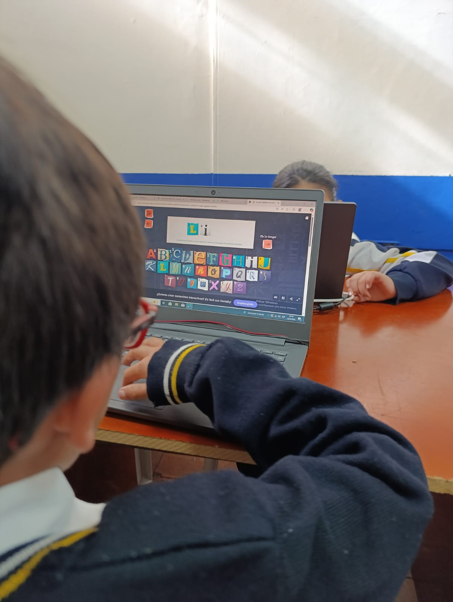

Tabla de Comparación
A continuación se presentan los avances obtenidos en cada año del proyecto pedagógico.
| Aspecto | Año 1 | Año 2 |
|---|---|---|
| Curso | Grado 3° | Grado 4° |
| Enfoque | Comprensión lectora inicial | Lectura con transversalidad en tecnología |
| Fortalezas | Motivación por la lectura | Uso de herramientas digitales |
| Retos | Desarrollo de hábitos de lectura | Integrar TIC de forma pedagógica |
Galería del Proyecto
Algunas imágenes del trabajo realizado con los estudiantes.


